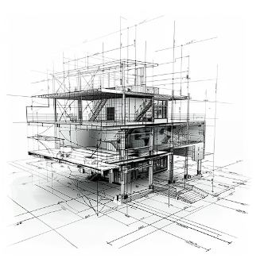

Vreți să discutăm mai multe despre proiectul dumneavoastră?
Stabilește o întâlnireÎntocmim documentațiile tehnice necesare pentru autorizarea și execuția lucrării, în funcție de tema de proiectare a beneficiarului și cu respectarea normativelor și standardelor în vigoare.
Livrăm documentații complete, la termen și în limitele bugetului convenit.
Suntem o echipă de ingineri cu specializare în construcții civile, industriale și agricole, cu experiență în documentații de autorizare și în proiecte tehnice.
Faza documentației — D.T.A.C., D.T.A.C./D.T.O.E. sau D.T.A.D. — nu se alege, ci rezultă din certificatul de urbanism. Trimiteți-ne certificatul și vă spunem exact ce este cerut, ce avize trebuie obținute în paralel și în ce ordine.